The half adder is a basic building block for more complex adder circuits. It performs binary addition of two single-bit inputs, A and B, and provides two outputs, SUM and CARRY.
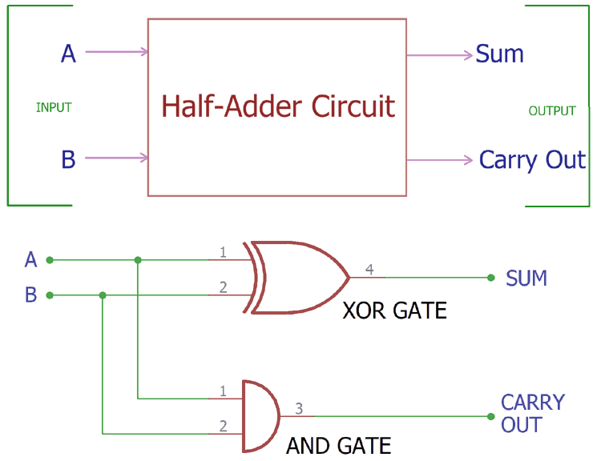The full adder is used to add three 1-bit binary numbers A, B, and carry C. It has three input states and two output states i.e., sum and carry.
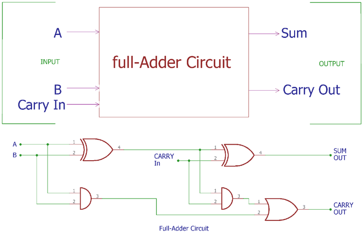A half subtractor is a digital logic circuit that performs binary subtraction of two single-bit binary numbers. It has two inputs, A and B, and two outputs, DIFFERENCE and BORROW. The DIFFERENCE output is the difference between the two input bits, while the BORROW output indicates whether borrowing was necessary during the subtraction.
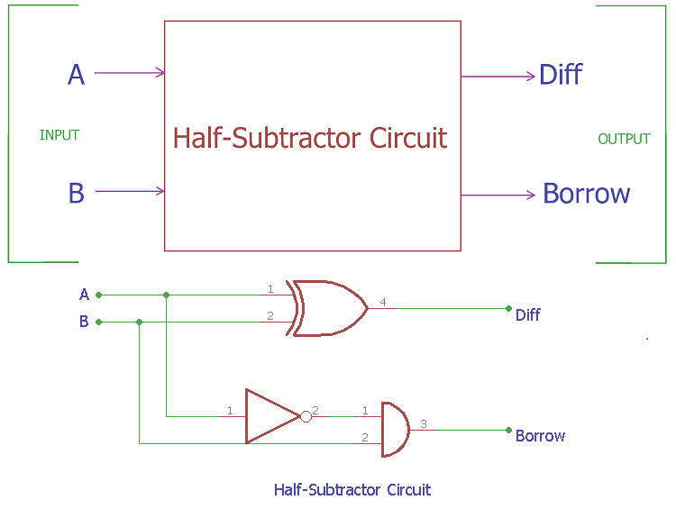A full subtractor is a combinational logic circuit used to perform the subtraction of two single bit numbers with a borrow.It has three inputs and two outputs, denoted by a, b, and c respectively. The simplified boolean functions for the two outputs of the full subtractor are derived from the K-maps and can be represented as. It overcomes the limitation of the half subtractor. The full subtractor uses binary digits like 0,1 for the subtraction. It is a basic electronic device used to perform subtraction of two binary numbers.
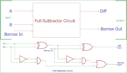The 2-to-4 line binary decoder depicted above consists of an array of four AND gates. The 2 binary inputs labelled A and B are decoded into one of 4 outputs, hence the description of 2-to-4 binary decoder. Each output represents one of the minterms of the 2 input variables, (each output = a minterm).
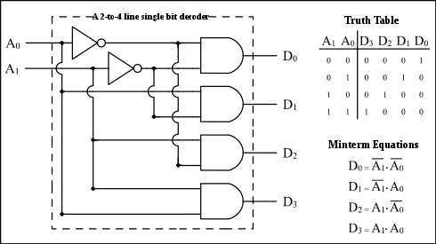The 3 to 8 line decoder is also known as Binary to Octal Decoder. In a 3 to 8 line decoder, there is a total of eight outputs, i.e., Y0, Y1, Y2, Y3, Y4, Y5, Y6, and Y7 and three outputs, i.e., A0, A1, and A2. This circuit has an enable input 'E'. Just like 2 to 4 line decoder, when enable 'E' is set to 1, one of these four outputs will be 1.
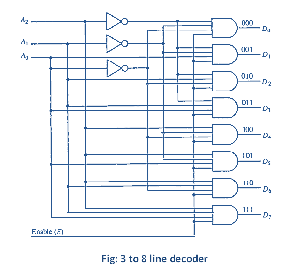In 2×1 multiplexer, there are only two inputs, i.e., A0 and A1, 1 selection line, i.e., S0 and single outputs, i.e., Y. On the basis of the combination of inputs which are present at the selection line S0, one of these 2 inputs will be connected to the output.
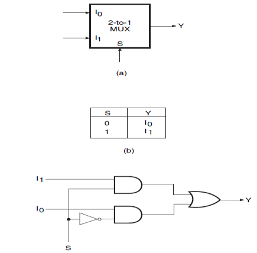In the 4×1 multiplexer, there is a total of four inputs, i.e., A0, A1, A2, and A3, 2 selection lines, i.e., S0 and S1 and single output, i.e., Y. On the basis of the combination of inputs that are present at the selection lines S0 and S1, one of these 4 inputs are connected to the output. The block diagram of the 4×1 multiplexer are given below.
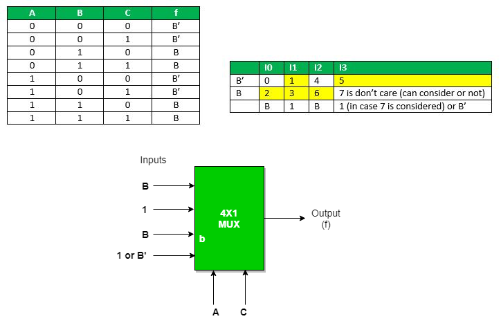In the 8 to 1 multiplexer, there are total eight inputs, i.e., A0, A1, A2, A3, A4, A5, A6, and A7, 3 selection lines, i.e., S0, S1and S2 and single output, i.e., Y. On the basis of the combination of inputs that are present at the selection lines S0, S1, and S2, one of these 8 inputs are connected to the output. The block diagram of the 8×1 multiplexer are given below.
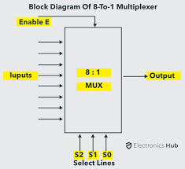A 1-to-2 demultiplexer consists of one input line, two output lines and one select line. The signal on the select line helps to switch the input to one of the two outputs. The figure below shows the block diagram of a 1-to-2 demultiplexer with additional enable input. In the figure, there are only two possible ways to connect the input to output lines, thus only one select signal is enough to do the demultiplexing operation. When the select input is LOW, then the input will be passed to Y0 and if the select input is HIGH, then the input will be passed to Y1.
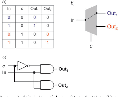A 1-to-4 demultiplexer has a single input (D), two selection lines (S1 and S0) and four outputs (Y0 to Y3). The input data goes to any one of the four outputs at a given time for a particular combination of select lines. This demultiplexer is also called as a 2-to-4 Demultiplexer, which means that it has two select lines and 4 output lines. The block diagram of a 1:4 DEMUX is shown below.
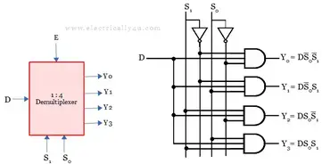The below figure shows the block diagram of a 1-to-8 demultiplexer that consists of single input D, three select inputs S2, S1 and S0 and eight outputs from Y0 to Y7. It is also called as 3-to-8 demultiplexer due to its three select input lines and 8 output lines. It distributes one input line to one of 8 output lines depending on the combination of select inputs.
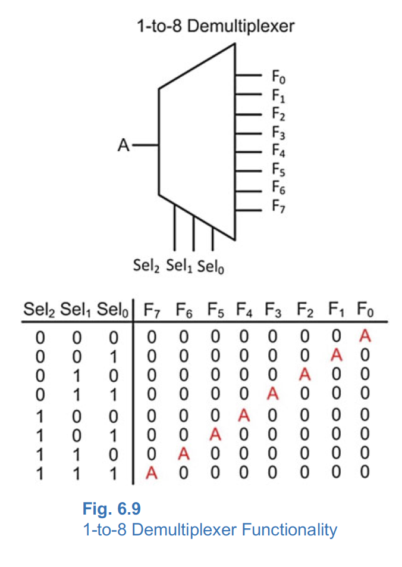